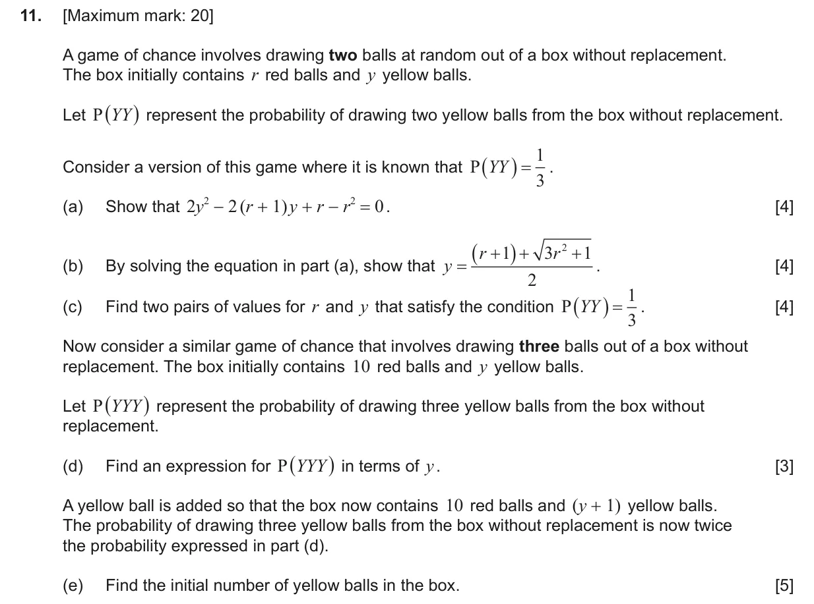
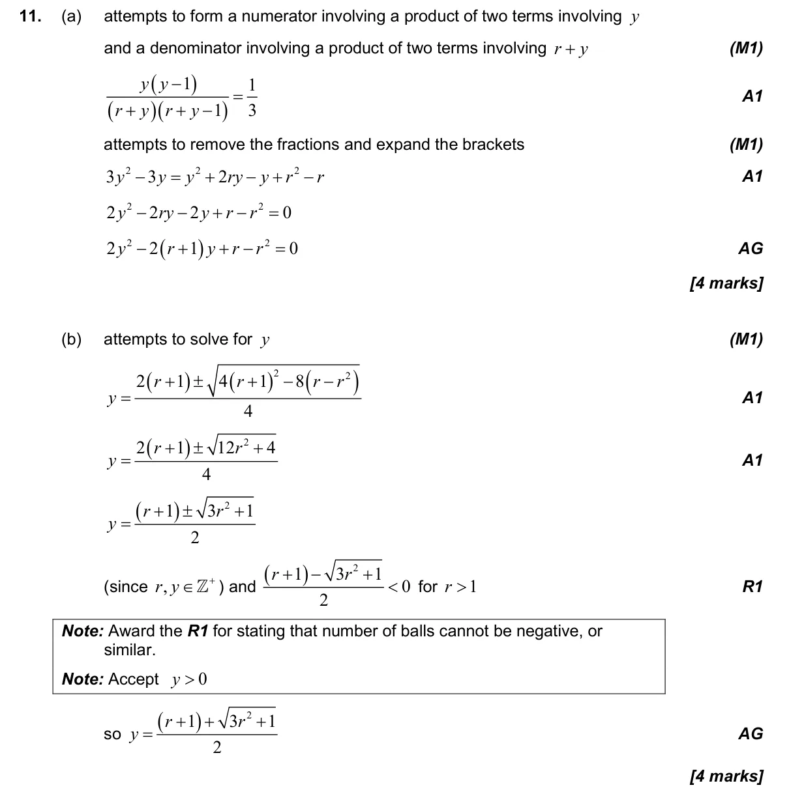
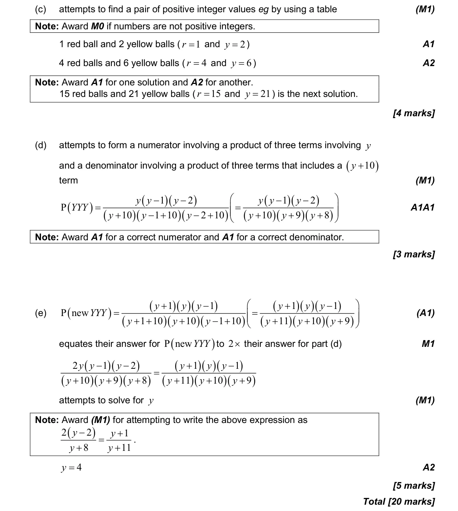

4.6 Combined, mutually exclusive, conditional, independence and probability diagrams2.7 Solutions of quadratic equations and inequalities, discriminant and nature of roots2.10 Solving equations graphically and analytically
Question

Markscheme

